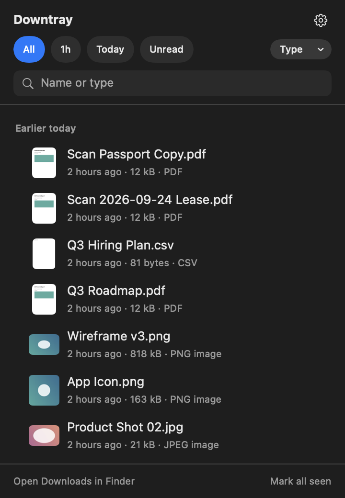

Your downloads, one click away.
A menu bar inbox for the files that just landed in Downloads. Press ⌃⌥D, see what arrived, deal with it in one keystroke. Lightweight, private, no fluff.
Requires macOS Sonoma 14 or higher

Why Downtray?
Downloads is where files pile up. Downtray is the shortcut through the pile.
No fluff
Unlike file managers and launchers, Downtray does one thing: it shows what just landed in Downloads and lets you deal with it. No sidebar, no tabs, no cloud.
Lightweight and fast
A single popover that opens instantly. The list is ready before your hand leaves the keyboard, with a thumbnail and the site each file came from.
Keyboard-first
Press ⌃⌥D, arrow to a file, and one key does the rest: open, Quick Look, reveal, copy path, move, unzip, trash. Your hands never leave the keyboard.
Secure and private
Sandboxed, no network, no analytics, no account. Downtray only reads the folders you allow, and everything it remembers stays on your Mac.
Native
Built with SwiftUI and AppKit. Dark and light mode, Quick Look, drag and drop, the real Trash with undo. It looks and feels like part of macOS.
Any folder, any language
Watch the Desktop, a scanner folder or an AirDrop target too. Available in English, Japanese, German and French, following your macOS language.